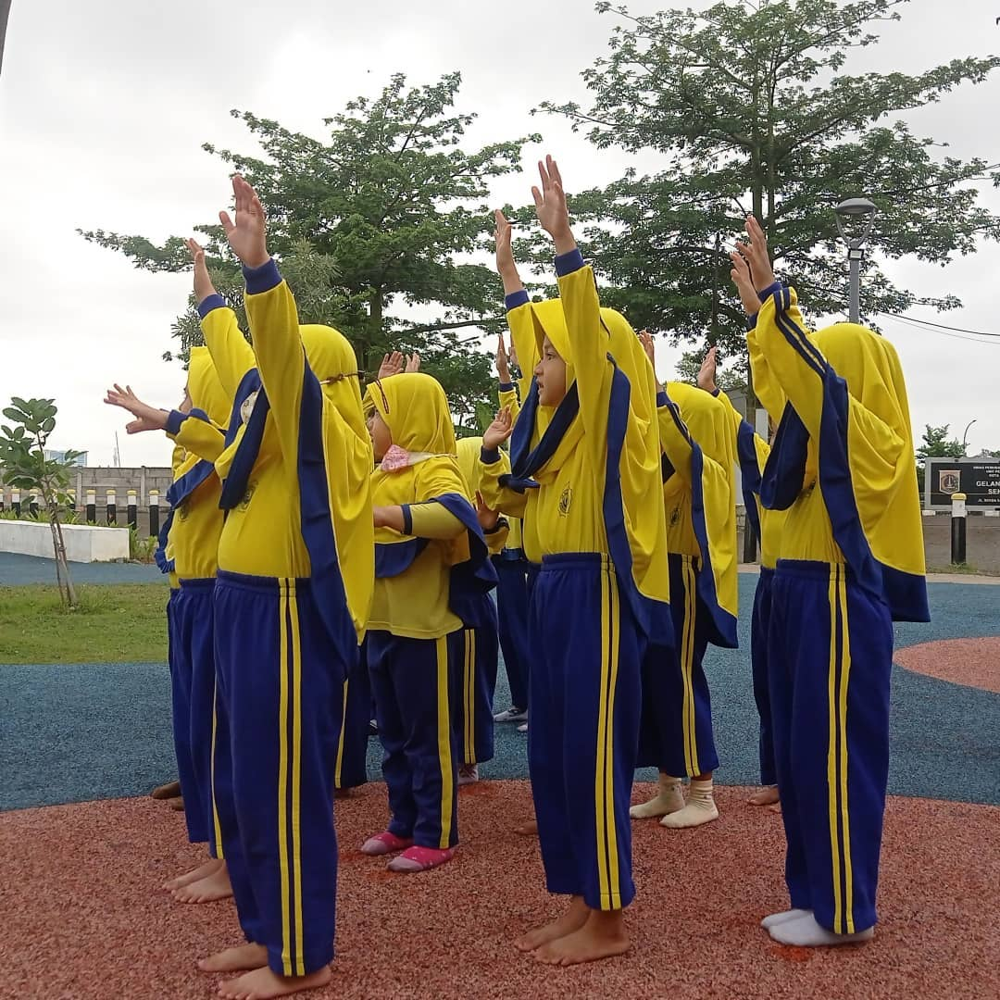
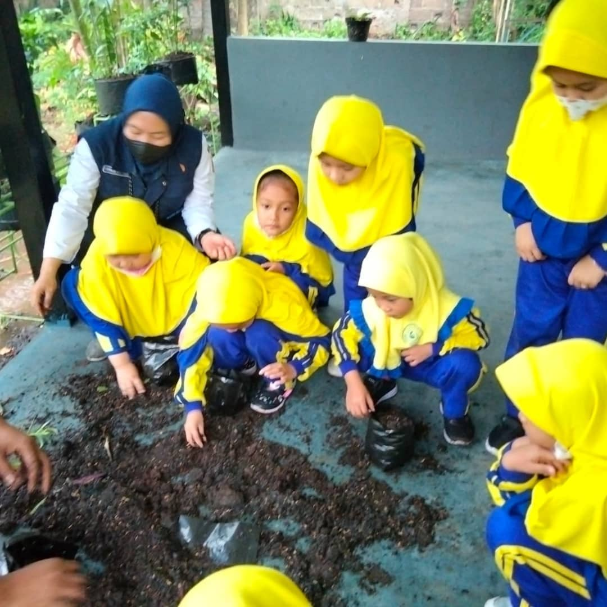
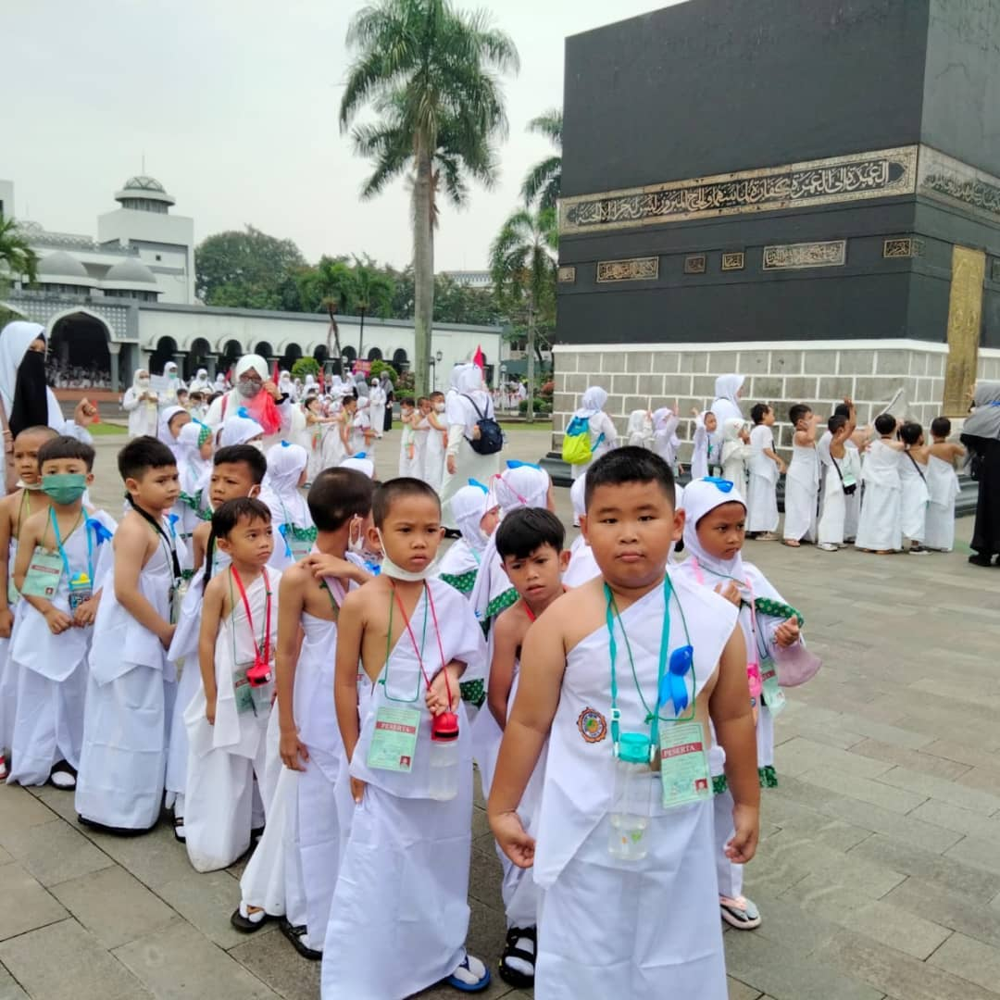

Galeri Kegiatan Siswa

Senam Pagi Bersama

Kegiatan Bercocok Tanam

Manasik Haji
Shoping Day

PPDB Periode 2026-2027

WISUDA TK-ALKAMAL
TK Al Kamal adalah lembaga pendidikan anak usia dini yang berkomitmen memberikan pendidikan terbaik bagi generasi emas melalui pembelajaran yang ceria, aman, dan berlandaskan nilai-nilai Islami. Kami percaya bahwa setiap anak adalah anugerah yang memiliki potensi unik yang perlu dikembangkan sejak dini dengan penuh kasih sayang. Dengan tenaga pendidik yang berpengalaman, sabar, dan profesional, TK Al Kamal menghadirkan lingkungan belajar yang mendukung tumbuh kembang anak secara holistik, meliputi perkembangan kognitif, motorik, bahasa, sosial-emosional, serta pembentukan akhlak mulia. Proses pembelajaran di TK Al Kamal dirancang secara aktif, kreatif, dan menyenangkan, melalui kegiatan bermain sambil belajar, pembiasaan ibadah, pengenalan Al-Qur’an, serta penanaman nilai-nilai disiplin, kemandirian, dan kepedulian terhadap sesama. Anak-anak dibimbing untuk tumbuh menjadi pribadi yang cerdas, percaya diri, berakhlak baik, dan siap melanjutkan pendidikan ke jenjang berikutnya. Didukung dengan lingkungan sekolah yang aman, nyaman, dan ramah anak, serta kerja sama yang baik dengan orang tua, TK Al Kamal menjadi pilihan tepat bagi Ayah dan Bunda yang menginginkan pendidikan awal terbaik untuk putra-putrinya.
Senam Pagi Bersama
Kegiatan Bercocok Tanam
Manasik Haji
Shoping Day
PPDB Periode 2026-2027
WISUDA TK-ALKAMAL
• Pembelajaran Islami, ceria, dan menyenangkan
• Guru kompeten, peduli, dan penuh kasih
• Fokus pada akhlak, karakter, dan kemandirian anak
• Lingkungan belajar aman & ramah anak
• Pendampingan tumbuh kembang anak secara optimal
📍 Jl. Marunda Gg. 1 No.16, Sarang Bango, Jakarta Utara
📞 WhatsApp: 0813-8551-3982 | 0877-2911-7309